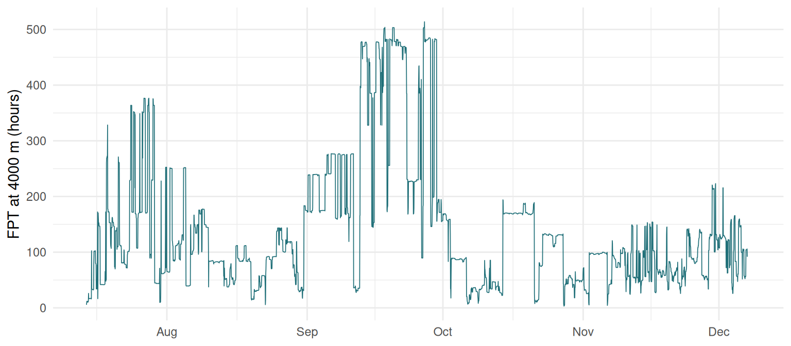
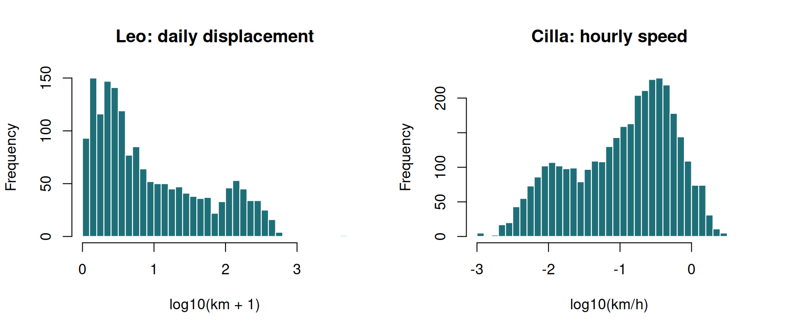
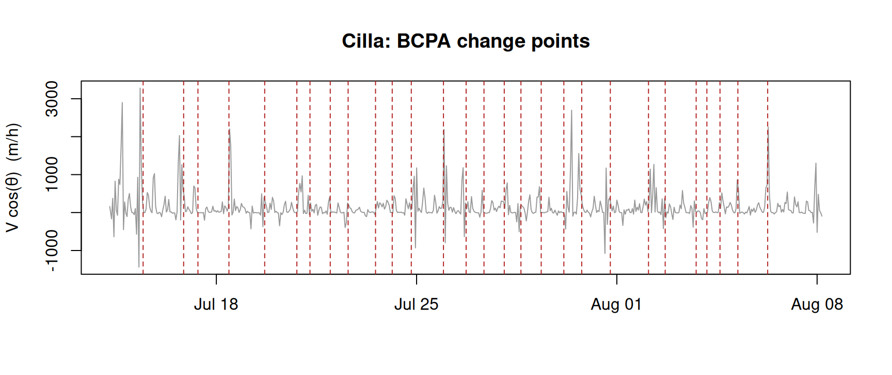

Practical 4 — Quantifying movement
Session 4 · Path descriptors and behavioural classification
Goals. Compute net squared displacement and classify movement strategies by fitting competing models; measure straightness across scales; find the scale of area-restricted search with first-passage time; segment a track with a threshold where that is honest; run behavioural change-point analysis and test whether its answer survives a change of fix rate.
Time: ~75 minutes. Packages: amt, adehabitatLT, bcpa, dplyr, tidyr, lubridate, ggplot2.
Setup — tracks from Sessions 1–3
buffalo <- read.csv("data/buffalo_kruger.csv.gz") |>
transmute(id = individual.local.identifier,
t = as.POSIXct(timestamp, tz = "UTC"),
x = location.long, y = location.lat) |>
filter(!is.na(x), !is.na(y)) |>
distinct(id, t, .keep_all = TRUE)
trk <- make_track(buffalo, x, y, t, id = id, crs = 4326) |>
transform_coords(crs_to = 32736)
vulture <- read.csv("data/vulture_leo.csv.gz") |>
transmute(t = as.POSIXct(timestamp, tz = "UTC"),
x = location.long, y = location.lat) |>
filter(!is.na(x)) |>
distinct(t, .keep_all = TRUE)
# Leo spans 47 degrees of latitude: no UTM zone fits, so use a global
# equal-area projection (EPSG:6933)
leo <- make_track(vulture, x, y, t, crs = 4326) |>
transform_coords(crs_to = 6933)Task 1 — Net squared displacement
adehabitatLT computes NSD for you: it is the R2n column.
cilla <- trk |> filter(id == "Cilla")
ltr <- as.ltraj(xy = as.data.frame(cilla[, c("x_", "y_")]),
date = cilla$t_, id = "Cilla")
nsd_cilla <- ld(ltr) |> transmute(t = date, nsd_km2 = R2n / 1e6)
leo_ltr <- as.ltraj(xy = as.data.frame(leo[, c("x_", "y_")]),
date = leo$t_, id = "Leo")
nsd_leo <- ld(leo_ltr) |> transmute(t = date, nsd_km2 = R2n / 1e6)bind_rows(mutate(nsd_cilla, who = "Buffalo 'Cilla'"),
mutate(nsd_leo, who = "Vulture 'Leo'")) |>
ggplot(aes(t, nsd_km2)) +
geom_line(colour = "#1f6f78", linewidth = 0.3) +
facet_wrap(~ who, scales = "free") +
labs(x = NULL, y = "NSD (km²)") +
theme_minimal()
Your turn
1a. Describe each curve in one sentence. Which looks resident, which migratory?
Cilla’s NSD rises quickly to a ceiling and fluctuates below it: once she has explored her range she cannot get further from the start — a resident.
Leo’s NSD shows six annual cycles: a rise (autumn migration), a plateau (wintering), a fall (spring migration), a plateau (breeding) — the textbook migratory profile. The next task makes that judgement quantitative.
Task 2 — Classify the strategy by fitting models
Bunnefeld et al. (2011): fit one model per strategy and compare. We fit on daily mean positions to keep the curves manageable.
daily_nsd <- function(tr) {
d <- tr |>
mutate(day = as_date(t_)) |>
group_by(day) |>
summarise(x = mean(x_), y = mean(y_), .groups = "drop") |>
arrange(day)
data.frame(t = as.numeric(d$day - d$day[1]),
nsd = ((d$x - d$x[1])^2 + (d$y - d$y[1])^2) / 1e6) # km²
}
fit_strategies <- function(d) {
D <- max(d$nsd)
ctl <- nls.control(maxiter = 500, warnOnly = TRUE)
half_up <- d$t[which.max(d$nsd > D / 2)]
half_down <- d$t[nrow(d) - which.max(rev(d$nsd) > D / 2) + 1]
fits <- list(
nomad = try(nls(nsd ~ b * t, d, start = list(b = D / max(d$t))), silent = TRUE),
resident = try(nls(nsd ~ c * (1 - exp(-k * t)), d,
start = list(c = median(d$nsd), k = 0.05), control = ctl), silent = TRUE),
disperser = try(nls(nsd ~ dd / (1 + exp((th - t) / ph)), d,
start = list(dd = D, th = half_up, ph = 5), control = ctl), silent = TRUE),
migrant = try(nls(nsd ~ dd / (1 + exp((th1 - t) / ph1)) - dd / (1 + exp((th2 - t) / ph2)), d,
start = list(dd = D, th1 = half_up, ph1 = 5, th2 = half_down, ph2 = 5),
control = ctl), silent = TRUE)
)
fits[!vapply(fits, inherits, logical(1), "try-error")]
}
aic_table <- function(fits) {
a <- vapply(fits, AIC, numeric(1))
data.frame(model = names(a), dAIC = round(a - min(a))) |> arrange(dAIC)
}Leo, June 2007 to June 2008:
leo_07 <- leo |> filter(t_ >= as.POSIXct("2007-06-01", tz = "UTC"),
t_ < as.POSIXct("2008-06-01", tz = "UTC"))
fits_leo <- suppressWarnings(fit_strategies(daily_nsd(leo_07)))
aic_table(fits_leo)
#> model dAIC
#> migrant migrant 0
#> disperser disperser 2183
#> resident resident 2326
#> nomad nomad 2402The migrant model wins by a mile. Now read its parameters:
cf <- coef(fits_leo$migrant)
c(migration_distance_km = sqrt(cf[["dd"]]),
departs_day = cf[["th1"]], returns_day = cf[["th2"]])
#> migration_distance_km departs_day returns_day
#> 6145.4027 129.4811 292.6636
as.Date("2007-06-01") + round(c(cf[["th1"]], cf[["th2"]])) # as calendar dates
#> [1] "2007-10-08" "2008-03-20"Your turn
2a. Fit the four models to every buffalo. What wins? 2b. For the “migrants”, what is the migration distance? Are they migrants? 2c. Fit Leo’s 2011–2012 year. What goes wrong, and why?
strategy_summary <- function(tr, label) {
f <- suppressWarnings(fit_strategies(daily_nsd(tr)))
a <- aic_table(f)
best <- a$model[1]
dist <- if (best == "migrant" || best == "disperser") sqrt(abs(coef(f[[best]])[["dd"]])) else NA
data.frame(animal = label, days = nrow(daily_nsd(tr)), best = best,
runner_up_dAIC = a$dAIC[2], displacement_km = round(dist, 1))
}
bind_rows(lapply(unique(trk$id), \(i) strategy_summary(filter(trk, id == i), i)))
#> animal days best runner_up_dAIC displacement_km
#> 1 Queen 215 migrant 3 11.8
#> 2 Gabs 158 migrant 27 10.4
#> 3 Cilla 147 disperser 1 10.5
#> 4 Mvubu 107 nomad 4 NA
#> 5 Toni 244 migrant 97 14.0
#> 6 Pepper 361 resident 60 NAThree buffalo come out as migrants — with “migration” distances of 10 to 14 km. That is a shift to another part of the home range for a few weeks or months, not a migration. The double-sigmoid is the most flexible of the four curves, so it fits any excursion-and-return, and with hundreds of autocorrelated daily points AIC differences are hugely inflated.
Look also at runner_up_dAIC: for several buffalo the second-best model is within a few AIC units of the winner. The data barely separate the stories.
leo_11 <- leo |> filter(t_ >= as.POSIXct("2011-06-01", tz = "UTC"),
t_ < as.POSIXct("2012-06-01", tz = "UTC"))
strategy_summary(leo_11, "Leo 2011-12")
#> animal days best runner_up_dAIC displacement_km
#> 1 Leo 2011-12 136 disperser 179 3721.2
range(leo_11$t_)
#> [1] "2011-06-01 00:00:00 UTC" "2011-10-18 11:00:00 UTC"Leo, a known migrant, is classified as a disperser in 2011–12. The reason is in the dates: that year’s data stop in the middle of the season, so only the outbound half of the cycle is present — which is a single sigmoid step. An incomplete cycle cannot show a return.
The lesson: model-based NSD classification is powerful, but only on complete cycles, and only if you read the parameters. A classification without a displacement distance and dates is not a result.
Task 3 — Straightness across scales
Straightness index = net displacement / path length, computed over a moving window.
hourly <- cilla |>
track_resample(rate = hours(1), tolerance = minutes(10)) |>
filter_min_n_burst(min_n = 3)
straightness <- function(tr, window_h) {
tr |>
mutate(win = floor(as.numeric(difftime(t_, min(t_), units = "hours")) / window_h)) |>
group_by(burst_, win) |>
filter(n() >= 0.8 * window_h) |>
summarise(net = sqrt((last(x_) - first(x_))^2 + (last(y_) - first(y_))^2),
path = sum(sqrt(diff(x_)^2 + diff(y_)^2)), .groups = "drop") |>
mutate(st = net / path)
}
st_tab <- lapply(c(3, 6, 12, 24, 72), function(w) {
s <- straightness(hourly, w)
data.frame(window_h = w, windows = nrow(s), median_ST = round(median(s$st), 3))
}) |> bind_rows()
st_tab
#> window_h windows median_ST
#> 1 3 1167 0.958
#> 2 6 584 0.827
#> 3 12 291 0.631
#> 4 24 145 0.389
#> 5 72 47 0.192The same buffalo is “straight” over 3 hours and “tortuous” over 3 days: straightness falls steadily as the window grows, because over longer periods the path doubles back on itself. A straightness index is meaningless without its window, and comparing indices computed over different windows is comparing different things.
Straightness is at its best for oriented movement over a defined journey — a homing bird, a migrating vulture between two stopovers — where the window is set by the biology rather than by you.
Task 4 — First-passage time
radii <- c(100, 250, 500, 1000, 1500, 2000, 3000, 4000, 5000, 6000)
f <- fpt(ltr, radii = radii, units = "hours")
vl <- varlogfpt(f, graph = FALSE)
fpt_profile <- data.frame(radius_m = radii, var_log_fpt = as.numeric(vl))
fpt_profile
#> radius_m var_log_fpt
#> 1 100 1.1895898
#> 2 250 0.7835631
#> 3 500 0.6064931
#> 4 1000 0.4623951
#> 5 1500 0.4164255
#> 6 2000 0.4752643
#> 7 3000 0.6177891
#> 8 4000 0.6942348
#> 9 5000 0.6472596
#> 10 6000 0.6595625ggplot(fpt_profile, aes(radius_m, var_log_fpt)) +
geom_line(colour = "#1f6f78") + geom_point(colour = "#1f6f78", size = 2) +
labs(x = "Radius (m)", y = "Variance of log(FPT)",
title = "Cilla: first-passage time profile") +
theme_minimal()
Your turn
4a. Where is the peak that indicates area-restricted search? 4b. Plot FPT at that radius along the track. When does Cilla linger?
The variance is highest at the smallest radii — but there it measures resting and GPS noise, not search. It falls to a minimum around 1.5 km and peaks again near 4 km: the scale at which Cilla’s use of space is most uneven, i.e. the size of the patches she responds to.
peak_r <- fpt_profile |> filter(radius_m >= 1000) |> slice_max(var_log_fpt) |> pull(radius_m)
peak_r
#> [1] 4000
data.frame(t = ld(ltr)$date, fpt_h = f[[1]][, which(radii == peak_r)]) |>
ggplot(aes(t, fpt_h)) +
geom_line(colour = "#1f6f78", linewidth = 0.3) +
labs(x = NULL, y = sprintf("FPT at %d m (hours)", peak_r)) +
theme_minimal()
Long first-passage times mark periods when Cilla stayed within a few kilometres for days; short ones mark relocations. Session 7 asks why — which habitats hold her.
Task 5 — Thresholds: one honest, one not
leo_daily <- leo |>
mutate(day = as_date(t_)) |>
group_by(day) |>
summarise(x = mean(x_), y = mean(y_), .groups = "drop") |>
arrange(day) |>
mutate(km = c(NA, sqrt(diff(x)^2 + diff(y)^2)) / 1000)
cilla_hourly_speed <- hourly |> steps_by_burst() |>
mutate(km_h = (sl_ / 1000) / as.numeric(dt_, units = "hours"))par(mfrow = c(1, 2))
hist(log10(leo_daily$km + 1), breaks = 50, col = "#1f6f78", border = "white",
main = "Leo: daily displacement", xlab = "log10(km + 1)")
hist(log10(cilla_hourly_speed$km_h + 0.001), breaks = 50, col = "#1f6f78",
border = "white", main = "Cilla: hourly speed", xlab = "log10(km/h)")
Your turn
5a. Where would you put a threshold for each animal? Can you defend it?
Leo’s histogram has two clearly separated modes — resident days of a few kilometres, migration days of a hundred or more — with an empty valley in between. Any threshold in the valley gives the same answer, so a threshold is transparent and honest:
Migration days fall in spring and autumn, exactly as the NSD model said.
Cilla’s hourly speeds form one broad, skewed hump. There is no valley, so wherever you put the line, you have made the answer rather than found it. That is precisely the situation in which you need a model that assigns states probabilistically and uses the fact that behaviour persists in time — Session 8’s hidden Markov models.
Task 6 — Behavioural change-point analysis
BCPA on persistence velocity \(V\cos\theta\), for the first 25 days of Cilla’s hourly track.
win <- cilla |> arrange(t_) |> filter(t_ < min(t_) + days(25))
run_bcpa <- function(d, windowsize) {
vt <- GetVT(MakeTrack(d$x_, d$y_, d$t_))
set.seed(1)
ws <- WindowSweep(vt, "V*cos(Theta)", windowsize = windowsize,
progress = FALSE, K = 2)
list(vt = vt, ws = ws, cps = ChangePointSummary(ws, clusterwidth = 3))
}
b1 <- run_bcpa(win, windowsize = 50)
nrow(b1$cps$phases)
#> [1] 29
Your turn
6a. Rerun with windowsize = 30. 6b. Resample to 3-hourly and rerun with a window covering the same time (17 fixes ≈ 50 hours). 6c. How many change points survive both analyses?
b1_30 <- run_bcpa(win, windowsize = 30)
win_3h <- win |> track_resample(rate = hours(3), tolerance = minutes(15))
b3_17 <- run_bcpa(win_3h, windowsize = 17)
b3_50 <- run_bcpa(win_3h, windowsize = 50)
data.frame(
analysis = c("hourly, 50-fix window", "hourly, 30-fix window",
"3-hourly, 17-fix window (~50 h)", "3-hourly, 50-fix window (~150 h)"),
phases = c(nrow(b1$cps$phases), nrow(b1_30$cps$phases),
nrow(b3_17$cps$phases), nrow(b3_50$cps$phases))
)
#> analysis phases
#> 1 hourly, 50-fix window 29
#> 2 hourly, 30-fix window 38
#> 3 3-hourly, 17-fix window (~50 h) 29
#> 4 3-hourly, 50-fix window (~150 h) 19The count moves with every choice you make. The honest question is not “how many phases?” but “which change points are robust?”:
cp_1h <- b1$cps$breaks$middle.POSIX
cp_3h <- b3_17$cps$breaks$middle.POSIX
matched <- vapply(cp_1h, \(tt) any(abs(difftime(cp_3h, tt, units = "hours")) <= 6),
logical(1))
c(hourly_change_points = length(cp_1h),
also_found_at_3h_within_6h = sum(matched),
share_robust = round(mean(matched), 2))
#> hourly_change_points also_found_at_3h_within_6h
#> 28.00 21.00
#> share_robust
#> 0.75About three quarters of the hourly change points reappear within six hours in the 3-hourly analysis. Those are the ones worth interpreting as changes in the buffalo’s behaviour. The remaining quarter appear only at one resolution: treat them as properties of the window and the sampling until shown otherwise.
To hand in
- The NSD strategy table (Task 2) for two animals of your choice, including displacement distance, with one sentence per animal on whether you believe the classification.
- One paragraph: is BCPA’s output for Cilla “real” behaviour or an artefact of the fix rate? Support it with the robustness numbers from Task 6.
Self-check
Turning angles of a track sampled every 6 hours are close to uniform. What does this tell you?
Persistence is a short-term property: over six hours the animal has changed activity several times, so one step’s direction says little about the next. That is a statement about the timescale of the behaviour relative to your sampling, not about the animal being random.
A disperser model fits a known migrant best. Most likely cause?
A migration observed only on the way out is a single step up in NSD — the disperser curve. Classify only complete cycles, and check the dates of your data before interpreting any strategy.
Before Session 5
- Codling, Plank & Benhamou (2008), Random walk models in biology — sections 1–3.
- Make sure
library(circular)loads.